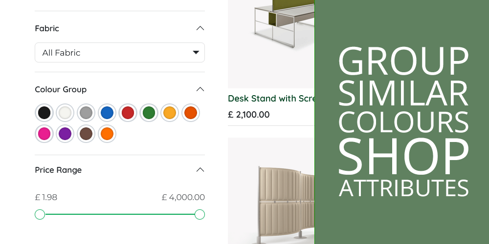
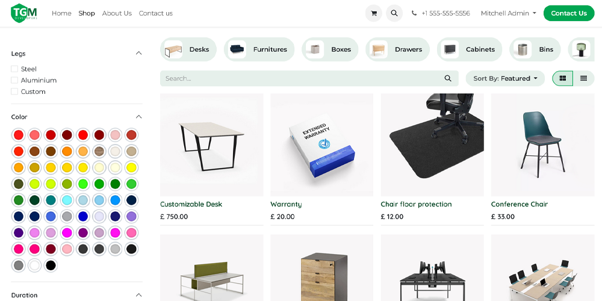
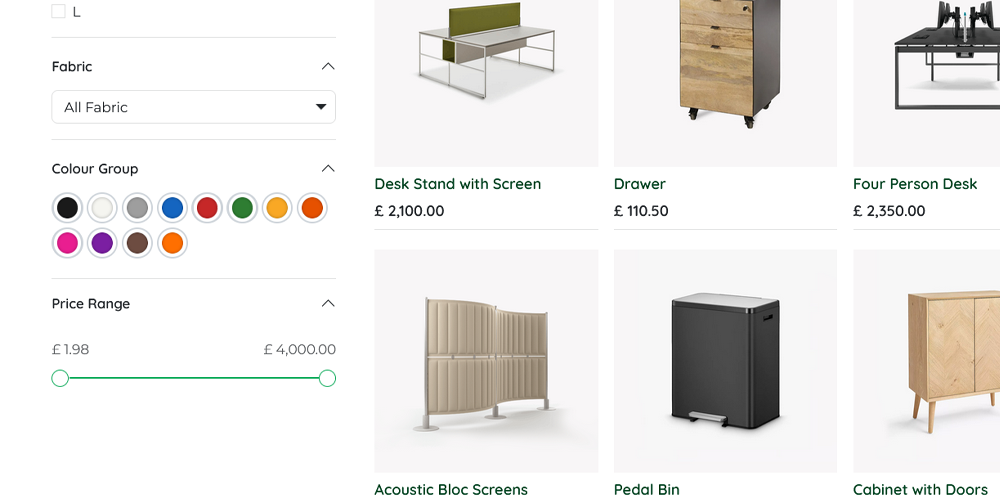
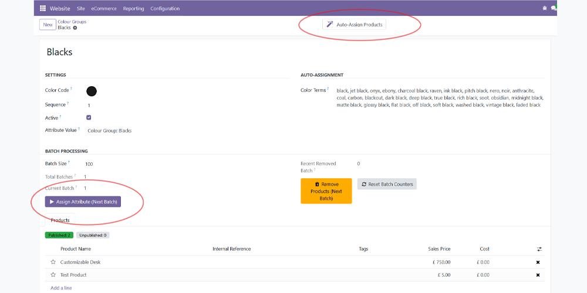

Turn 100+ messy colour shades into clean, browsable groups your customers will love.
When you source products from multiple suppliers, every supplier names their colours differently. One calls it "Navy", another "French Navy", another "Dark Navy", another "Midnight Blue". Your colour filter quickly balloons to 100+ options and becomes unusable for shoppers.

An overwhelming list of 100+ colour shades from multiple suppliers. Customers give up.
This module groups all those shades into clean colour categories. Navy, French Navy, Dark Navy, Midnight Blue, and 50 more blue shades all become simply "Blues". Customers pick a colour group, then browse all matching products — exactly how they expect to shop.

Clean, tidy colour groups. Customers find products instantly.
Installs with 12 pre-configured colour groups and nearly 500 search terms covering the most common colour names from promotional merchandise, fashion, and homeware suppliers. Just install, hit "Auto-Assign", and you're done.
One click matches products to colour groups using configurable search terms. Handles thousands of products.
Process large catalogues in configurable batches — no timeouts, even with 15,000+ products.
Pre-loaded with colour names from promotional merchandise, fashion, and homeware suppliers.
Colour Group is automatically hidden from sale order descriptions, the product configurator, and variant selectors.
Add your own groups, edit search terms, and tweak hex codes to match your store's needs.
See at a glance how many products in each group are live vs draft.

Easy configuration — set your terms, click Auto-Assign, and batch-update your catalogue.
Dozens of suppliers, hundreds of colour names. Group them all into clean categories.
Every season brings new colour names. Keep your filters consistent and shopper-friendly.
Harmonise colour data from many sources without editing every product individually.
Yes. Batch processing handles catalogues of 15,000+ products without timeouts. Set your batch size and click through at your own pace.
Absolutely. Create new groups, set your own hex codes, and add any search terms you need. The 12 defaults are a starting point.
No. The module automatically hides the Colour Group attribute from sale order line descriptions, the product configurator, and the website variant selector. It's purely for filtering.
You can manually add products to any group, or add new search terms and re-run the auto-assign.
No. Your existing colour attributes remain untouched. This module adds a separate "Colour Group" attribute that works alongside them.
No. Auto-assign adds new matches to the group without removing any products you've already assigned manually.
sale_management, website_sale (standard)product.color.groupInstall, auto-assign, and let your shoppers browse by colour — not by shade name.
Developed by The Great Merch Co.
Support: hello@thegreatmerch.com • thegreatmerch.com
© 2025 The Great Merch Co. Licensed under LGPL-3.